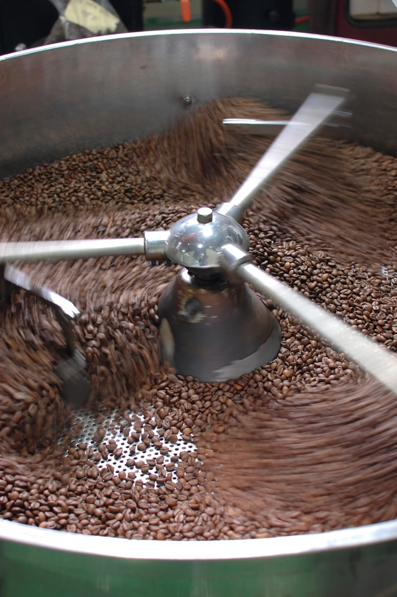
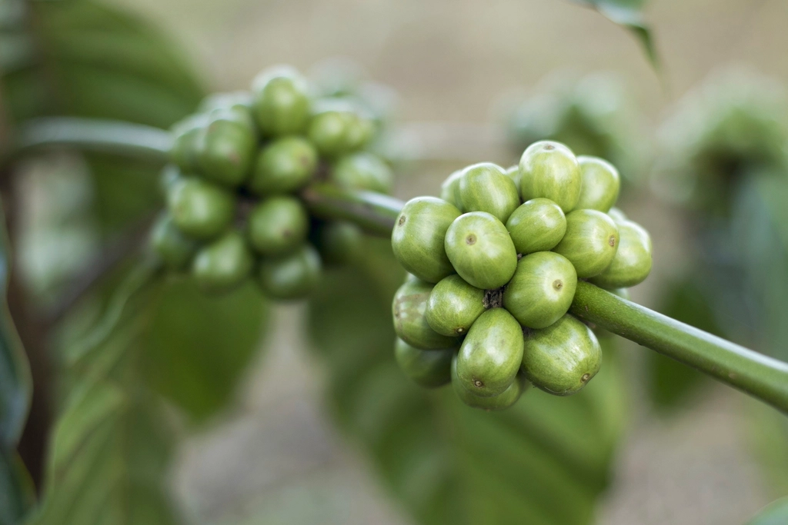
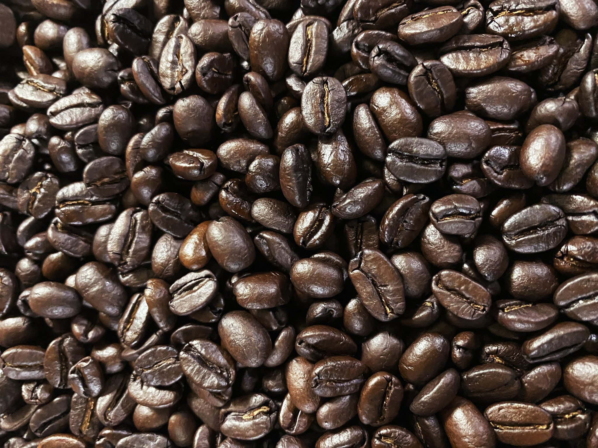
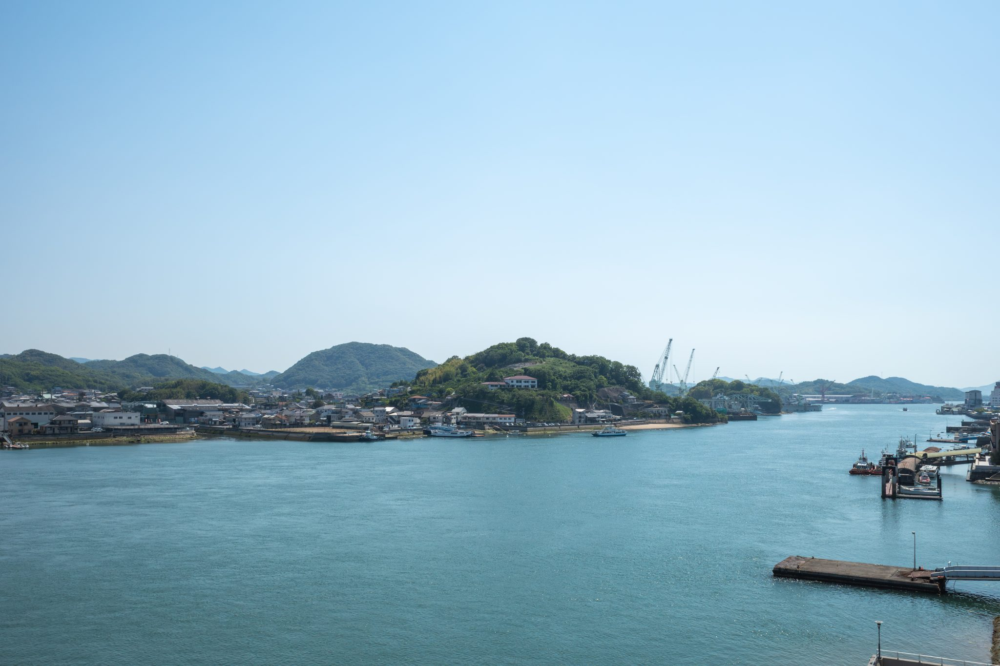

焙煎へのこだわり
TODAY IS THE DAY COFFEE ROASTERSが、小豆島で焙煎を続ける理由について。
一粒一粒に向き合う
焙煎は、豆の状態や気温、湿度によって表情を変えます。だからこそ私たちは、窯の前で豆の色づきと香りの変化を一つひとつ見極めながら、焙煎と向き合っています。
自家焙煎の一番の魅力は、焙煎したての香りをそのままお届けできることだと考えています。焙煎機の仕様や温度管理の詳細については、現在ご案内の準備を進めております。(※準備中)
袋を開けた瞬間に広がる香りを、小豆島からお客様のご自宅まで届けること。それが私たちの焙煎の出発点です。



瀬戸内海・小豆島から
小豆島は、オリーブと醤油づくりで知られる瀬戸内海の島です。穏やかな海に囲まれたこの土地の空気は、焙煎にも、店の空間づくりにも、静かに影響を与えています。
観光で島を訪れる方にも、島で暮らす方にも、同じように立ち寄っていただける場所でありたいと考え、落ち着いて過ごせる店内づくりを心がけています。
豆選びにおいても、この島でゆっくりと味わっていただける一杯を目指し、選定を重ねています。産地や仕入れ先の詳細は現在整理中です。(※準備中)

こだわりポイント
- 自家焙煎(焙煎士資格・仕入れ産地数などの詳細は ※詳細はお問い合わせください)
- 瀬戸内海・小豆島という環境を活かした店づくり
- 豆の状態に合わせた焙煎への向き合い方
上記の詳細な資格・産地情報については、現在確認中です。お気軽にお問い合わせください。